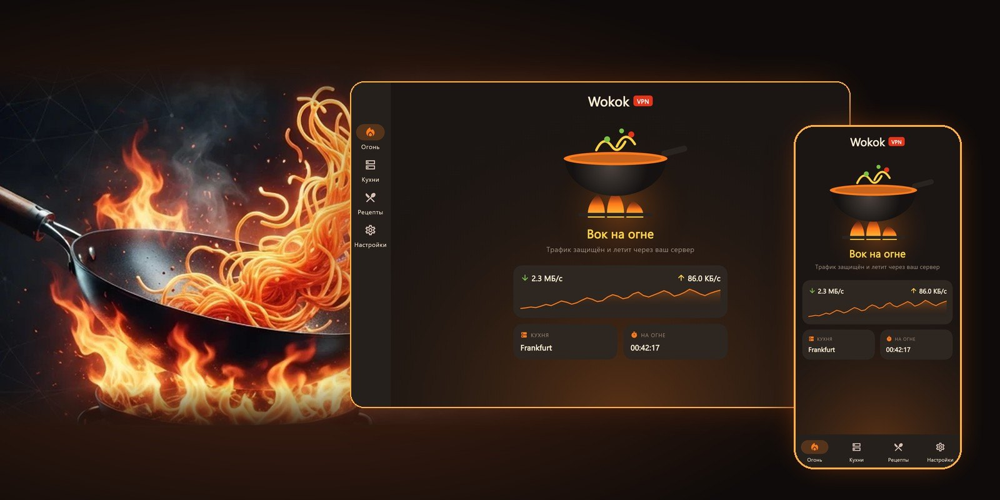
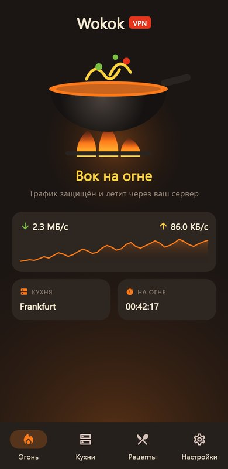
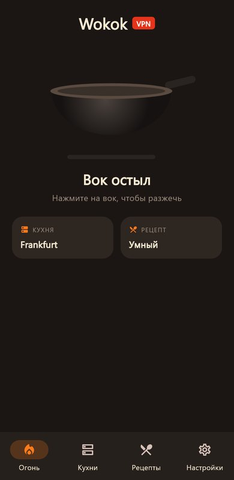
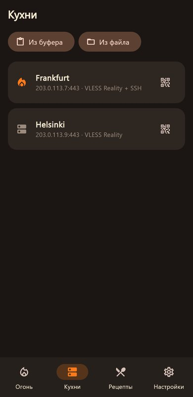
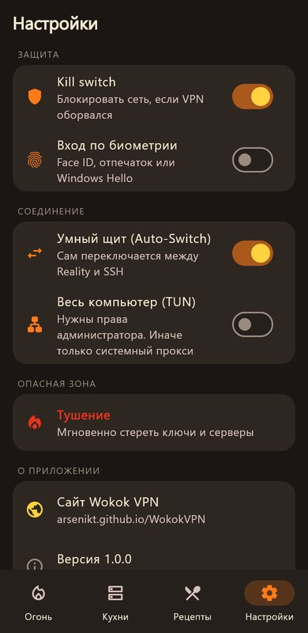
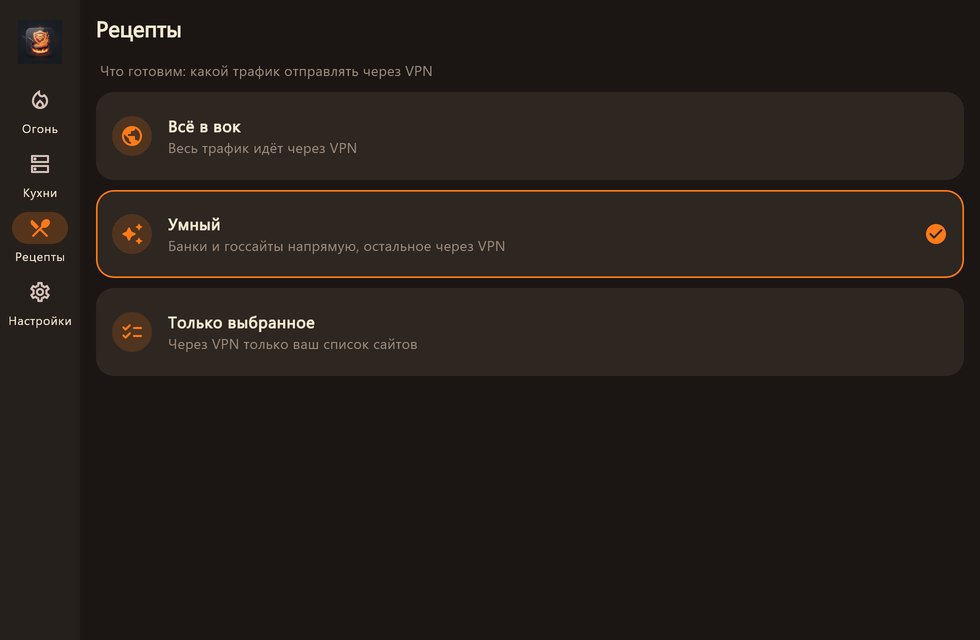
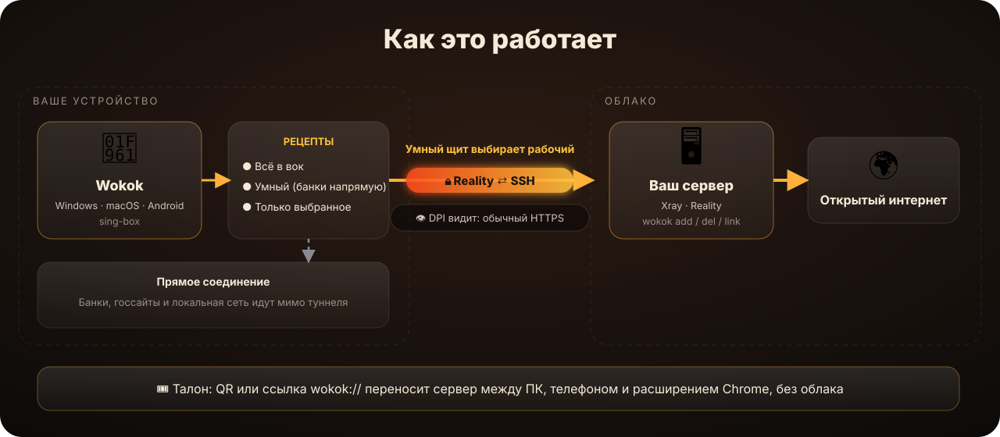

Wokok VPN теперь Wokok Box. Свой VPN на своём сервере, туннели, деплой, проверка слежки и защита от мошенников в одном приложении. Без аккаунтов, бэкенда и телеметрии.
Скачать
Один сервер, один талон, все устройства. Версии подтягиваются автоматически из GitHub.
Wokok Box 2.0 это ранний релиз: новые функции ещё не проверялись на настоящем сервере и телефонах. Deploy и Tunnel сначала попробуйте на запасном VPS. Названия файлов остаются WokokVPN.
Пять отсеков в одном приложении. Все уже можно скачать в версии 2.0.
Свой ngrok: публичная HTTPS-ссылка на то, что запущено у вас на localhost, через ваш собственный сервер.
Новое в 2.0 · на настоящем сервере ещё не проверялосьАдрес вида имя.IP-сервера.sslip.io. Свой домен тоже можно: добавьте A-запись *.домен.
Задайте, сколько живёт ссылка, закройте её паролем и покажите QR-код.
Запросы видны вживую, вебхук можно отправить повторно из приложения.
По желанию гости оставляют замечания прямо по вашей ссылке.
Пароль, срок, журнал и заметки обрабатываются у вас, на сервере работает только Caddy.
Если порт 443 занят Reality, HAProxy должен поделить его между VPN и туннелем без смены талонов.
wokok-box login root@203.0.113.7
wokok-box share 3000 --ttl 1d --password noodles --guestsКоманда wokok-box пока собирается из исходников: dart compile exe bin/wokok_box.dart. Готовых сборок утилиты нет.
VPS без терминала: выберите, что поставить на свой сервер, и приложение сделает остальное.
Новое в 2.0 · на настоящем сервере ещё не проверялосьСначала чек: что изменится на сервере и хватит ли ему ресурсов.
VPN, сайт из папки, ZIP или GitHub, Telegram-бота на Python или Node.js. Docker по желанию.
Проверка каждые 5 минут. Если новая версия не поднялась, возвращается предыдущая. Откат есть и вручную.
Doctor ищет, что сломалось. Витрина рецептов: fail2ban, обновления, BBR, подкачка, Uptime Kuma, заметки, файлы.
Нужен Debian или Ubuntu, root или sudo без пароля.
Кто за вами следит: какие приложения с кем разговаривают. Наблюдение идёт на вашем устройстве.
Новое в 2.0 · ранняя версияСписок тех, кому уходят запросы, и оценка от A до F.
Правила, которые блокируют выбранных получателей, пока включён VPN.
Что происходило ночью и кто отправил необычно много данных. Новые получатели вызывают оповещение.
| Платформа | Источник | Приложения | Объём данных |
|---|---|---|---|
| Windows | netstat и кэш DNS или VPN-ядро | да | только с включённым VPN |
| macOS | lsof или VPN-ядро | да | только с включённым VPN |
| Android | VPN-ядро | да | да |
| iOS | VPN-ядро | только адреса | да |
Наблюдение работает, пока запущено приложение. «Страна» в чеке это страна владельца сервиса из офлайн-базы, а не место, где стоит сервер.
Защита от мошенников: проверьте ссылку, сообщение или QR-код (камерой на телефоне и macOS). Правила работают офлайн, на русском, английском и македонском.
Новое в 2.0 · ранняя версияЗелёный, жёлтый или красный, с объяснением почему. Ответ можно прочитать вслух.
Готовое сообщение в WhatsApp, SMS или Telegram. Отправляете его вы сами.
Щит на уровне VPN и десять уроков по одной минуте.
На Android ссылку или сообщение можно отправить на проверку через «Поделиться».
Простой режим с крупными кнопками: проверить сообщение или ссылку, позвонить близкому человеку, включить защиту и потренироваться находить обман.
Есть в Wokok Box 2.0.
Правила снижают риск, но не гарантируют безопасность: зелёный результат не значит, что бояться нечего.
Один бренд и нативная обвязка: Material 3 на Android, вкладки Cupertino на iOS, боковая панель на ПК.





Выберите платформу, шаги ниже.
Три шага, пять минут.
Любой VPS за пару долларов. Одна команда, 30 секунд, и вы получаете ссылку wokok:// с QR-кодом.
Выберите свою платформу выше. Сканируйте QR-талон или вставьте ссылку из буфера.
Вок разогрелся, трафик защищён. Банки и госсайты в умном режиме идут напрямую.

Ubuntu, Debian, CentOS, Alma или Alpine. Запустите на сервере по SSH:
curl -fsSL https://raw.githubusercontent.com/arsenikt/WokokVPN-Chrome/main/server/install.sh | sudo bashПотеряли ссылку? На сервере: sudo wokok link. Друзьям: sudo wokok add ИМЯ.
Вок остывает, разогревается и горит вместе с состоянием VPN.
Сам переключается между Reality и SSH, если один из каналов режут.
«Всё в вок», «Умный» и «Только выбранное». Маршруты под вашу задачу.
QR или ссылка переносят сервер с ПК на телефон и обратно, без облака.
Одна кнопка стирает ключи и серверы с устройства.
Material 3, Cupertino, боковая панель, трей и меню-бар. Везде как родное.
Нет. У вас свой сервер и свои ключи. Никаких аккаунтов, телеметрии и бэкенда.
В App Store приложения нет. Добавьте наш источник в AltStore или поставьте IPA через Sideloadly: шаги в разделе «Установка». Сборка идёт без подписи Apple.
Сборки пока не подписаны сертификатом разработчика, поэтому SmartScreen показывает предупреждение. Проверить файл можно по SHA256SUMS в релизе.
На Android ядро готово (VpnService + sing-box), но пока не проверено на реальных телефонах. На iOS ядро собирается, но на настоящем iPhone не проверялось; VPN нужен платный Apple Developer, на бесплатном аккаунте он не заработает.
Откройте «Кухни» на любом устройстве Wokok или в расширении Chrome, покажите QR талона и отсканируйте его телефоном. Подойдёт и вставка ссылки wokok:// из буфера.
Wokok это инструмент для приватного доступа к вашему собственному серверу. Соблюдайте законы своей страны.
Бесплатно навсегда. Если Wokok выручил вечером, бросьте монетку в вок.
0x0aA2d41976f087763a354d598D32c21E1983CbFD
E1M7Ztc1MGnc587mmhk2dqBn2rWc4dXyx8huQ2HHpQjt
TXTrfbxAuy63ngzfWNiqubb2y2DHVqWbg9